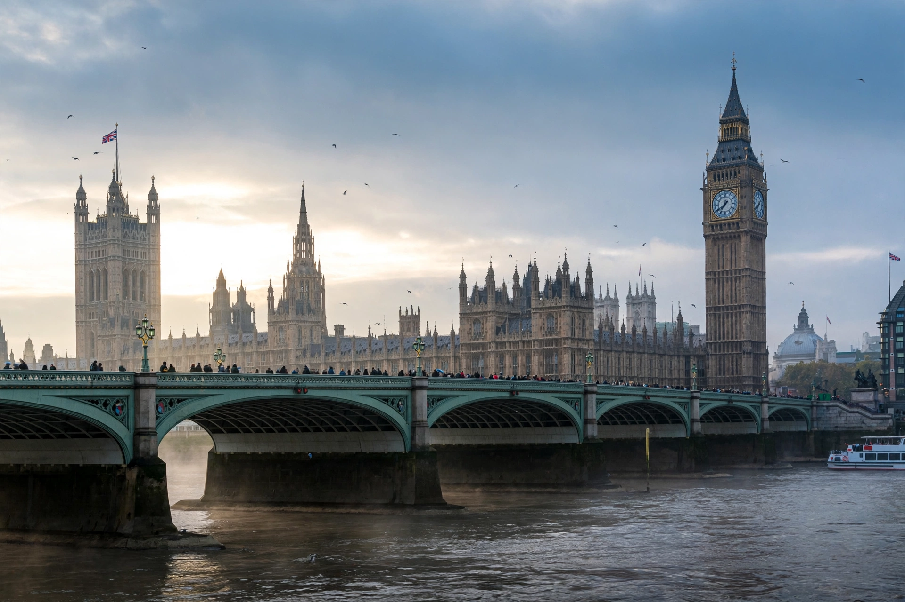

Top stories
News, politics and analysis from the Telegraph

The Telegraph's subscriber homepage leads with news and its columnists: politics from Westminster, business and money advice, sport, royal coverage and culture, in a traditional broadsheet voice.
News
The day's UK and world headlines
News desk coverage.
Politics
Westminster and the parties
Political reporting and comment.
Business
Markets, money and personal finance
Business and the popular Money section.
Sport
Football, cricket, rugby and golf
A heavyweight sports section.